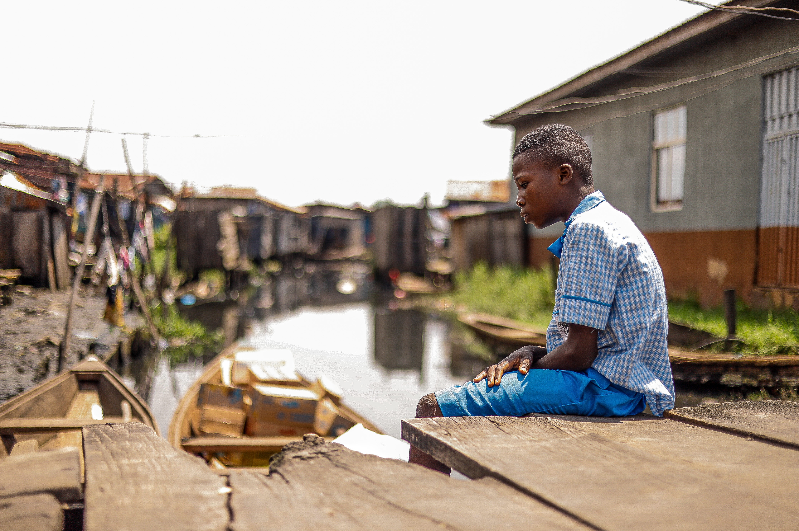
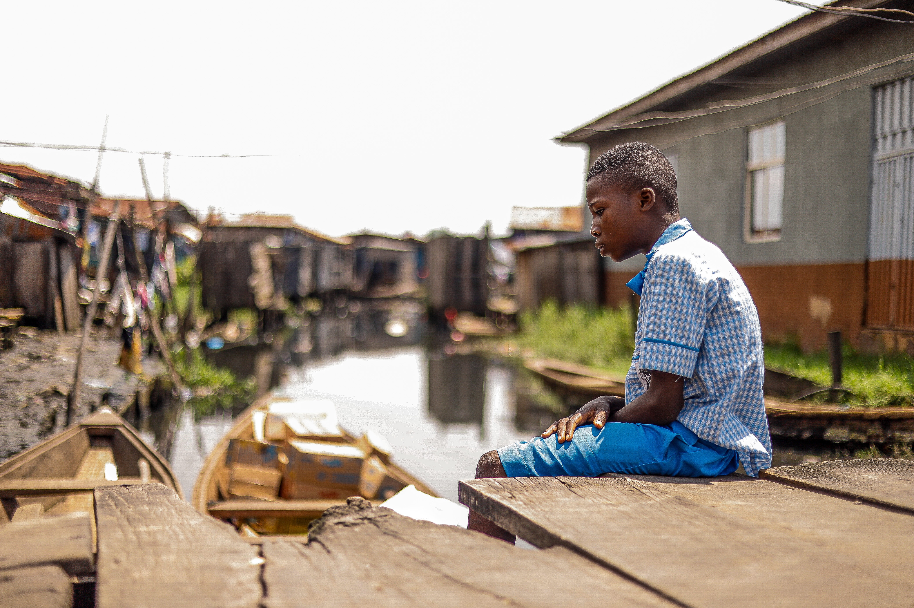

.jpg)
.jpg) 

 (1).jpg)
Desenvolvimento Sustentável 10
Objetivo de Desenvolvimento Sustentável 10 é: "Reduzir a desigualdade dentro dos países e entre eles". Para alcançar esse objetivo foi decretado dez metas a serem cumpridas até 2030.
Os tipos de Desigualdade que existem:
- Desigualdade econômica: desigualdade entre a distribuição de renda.
- Desigualdade racial: desigualdade de oportunidades para as diferentes raças: negro, branco, amarelo, pardo.
- Desigualdade regional: disparidades entre regiões, cidades e estados.
- Desigualdade de gênero: diferenças entre homens e mulheres, homossexuais, trans e demais gêneros.
Desigualdade Racial
O objetivo do site é focar na Desigualdade Racial sobre a falta de oportunidades de emprego para jovens da periferia e a consequência gerada por esse motivo.
O gráfico mostra alguns motivos que mais levam os jovens a entrarem no mundo do tráfico, a pesquisa foi realizada em algumas comunidades de Vitória-ES.
Infelizmente uma das consequências da desigualdade, foi o aumento dos jovens da periferia no tráfico, muitas famílias de comunidade normalmente só tem uma fonte de renda que é da provedora do lar, geralmente essas famílias não têm ajuda da parte paterna e o salário não é suficiente para sustentar a casa. Muitos jovens ver essa situação e tenta procurar um emprego como jovens aprendizes, adolescentes aprendizes e por morar em comunidades não consegue tão facilmente uma vaga e acabam entrando para o tráfico de drogas para poder conseguir dinheiro para ajudar a família, comprar um tênis, roupas e outros objetos.
Propostas contra a criminalidade juvenil
.png)
Gerar empregos para os jovens
.png)
Investir em educação
.png)
Melhorar o tratamento de viciados em drogas
.png)
Bolsa Formação
.png)
Apoiar a família
.png)
Melhorar a reinserção social de menores infratores
Emprega Nós
Emprega nós é um projeto realizado pelo Coletivo Beco e pela instituição Conexão Perifa(ICP) junto com a Casa Lilás.
Tendo como principal objetivo encaminhamento de pessoas que sairam do sistema penitenciário, mulheres, pessoas de periferia e jovens de 15 a 29 anos para o mercado de trabalho.
Sobre Mim
Meu nome é Beatriz Santos, tenho 22 anos,capixaba, nascida e criada na Comunidade da Penha vitória-es. Formada em ciência da computação e busco certificações na área de Programação web.
Agradeço ao elas_na_tech, à professora Juliana Ribeiro e às monitoas Erika e Vanessa Mainara pela oportunidade de aplicar meus conhecimentos de HTML e CSS para criar este site.
Um site onde posso trazer um pouco da minha realidade e de muitos jovens, moradores de comunidades e têm dificuldade de crescer profissionalmente, mas que sonham todos os dias poder mudar a realidade de si e de sua família.
.png)